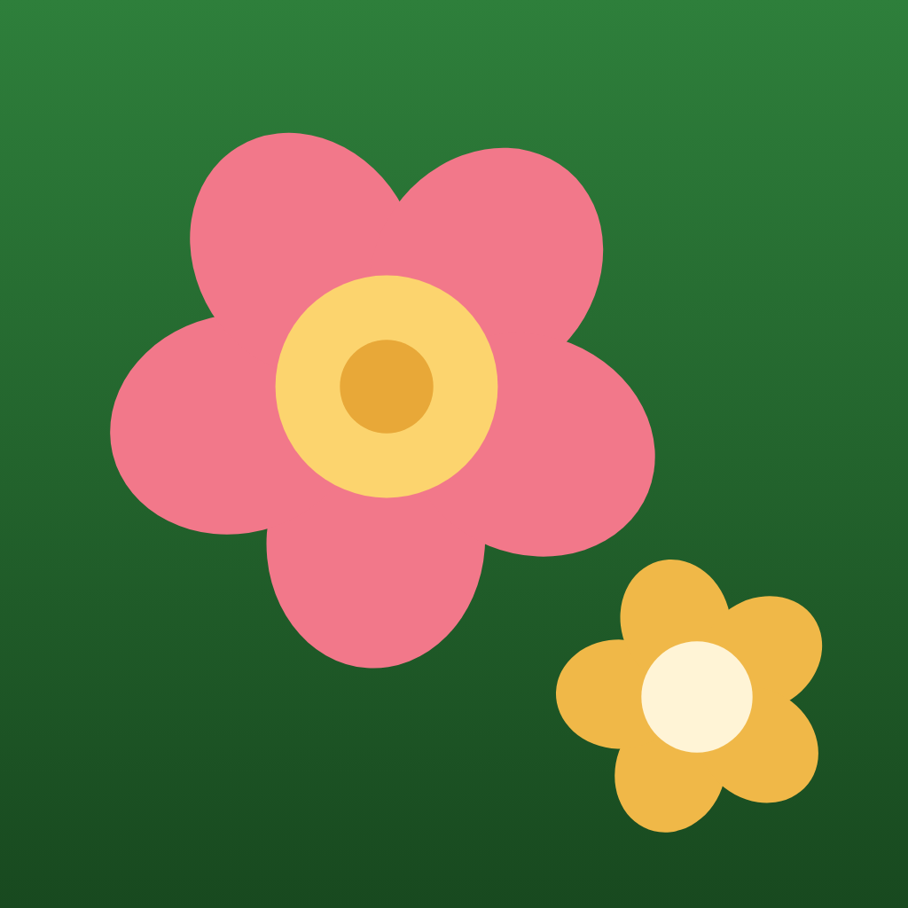
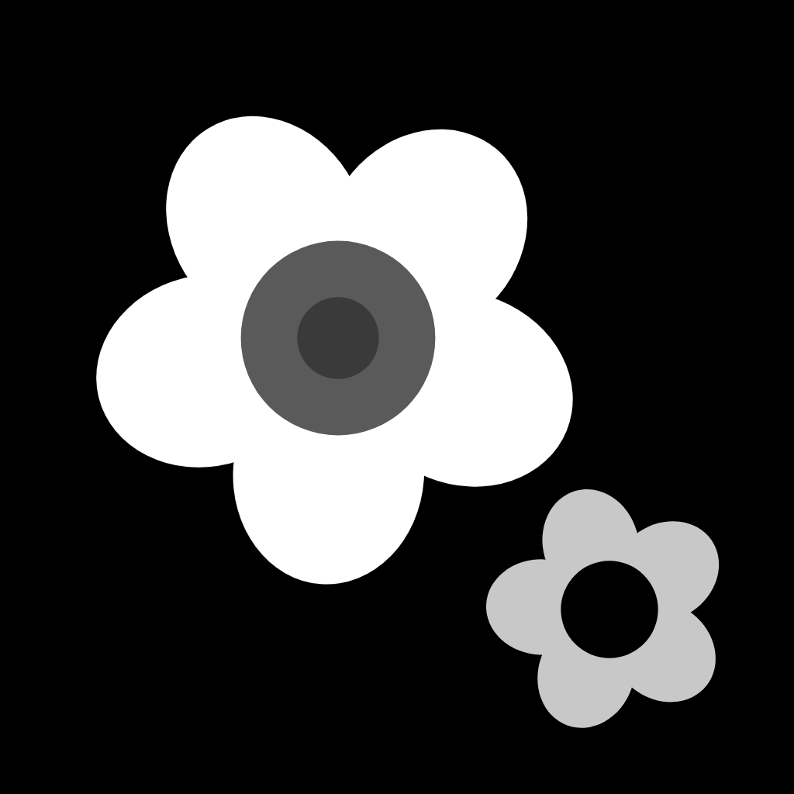
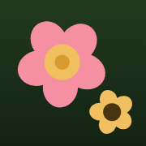

T-F logo · Direction A · Two blooms
Both O's bloom: an amber flower in “Word”, a rose flower in “Flora”.
In the app
Sized as the app uses WordmarkView: Home top bar (.title, about 22 pt tall) and the onboarding title (.largeTitle ×1.25, about 34 pt tall). Light and dark side by side.
App icon
The two O's, lifted out of the wordmark: the big rose bloom and the small amber bloom sit on one diagonal and never touch, so they stay two shapes at 29 px. Full-bleed square (iOS applies the corner mask); shown masked here.


Home screen row, real pixel sizes (1024 is shown at 120)

Monochrome
One colour. Each bloom becomes a five-lobed ring with the centre knocked out, which is literally an “o” with a petalled edge. Use for embossing, single-ink print, watermarks.
Small-size check
Rendered PNGs at 1×, then the same pixels enlarged 4× (no smoothing) so you can see what the screen actually draws.
 wordmark 120 px wide (19 px tall)120 px wordmark ×4
wordmark 120 px wide (19 px tall)120 px wordmark ×4Why this works
- The flower is the letter, not a decoration on it. Five rounded petals form the o's outer edge; the centre disc sits exactly where the counter (the hole) of Nunito Black's o would be. In one colour the centre is cut out, so it is still an o.
- Counter stays the lightest part in light mode, the darkest in dark mode. Pale butter / gold centres on light, deep brown / plum centres on dark. That keeps the ring-with-a-hole silhouette, which is what makes the eye read “o” at 19 px.
- Two blooms, two colours, one per word. Amber in “Word”, rose in “Flora”: the two words keep their existing colours (#2C3E2C and #2A7A38 light; #D4EDD4 and #F0C060 dark), and each bloom adds the other warm colour from the app palette.
- Same letters as today. Heavy rounded sans (Nunito Black, a close stand-in for SF Rounded Heavy) converted to paths, so the SVGs need no font. Kerning tightened around the blooms.
- Five petals, not six. Six evenly spaced lobes read as a cog at small sizes, and Home puts the mark right next to the settings gear. Five petals read as a flower.
- The icon is the two O's. Same bloom geometry, rose big and amber small, on the Flora green. No face: the icon stays calm for adults and the shapes stay crisp at 29 px.
Colours, contrast ratios and colour-blind notes: notes.md.